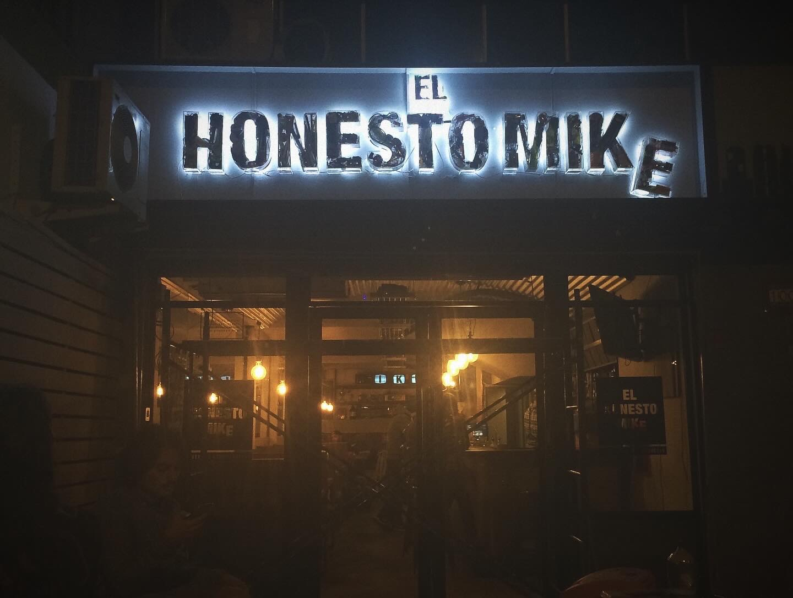
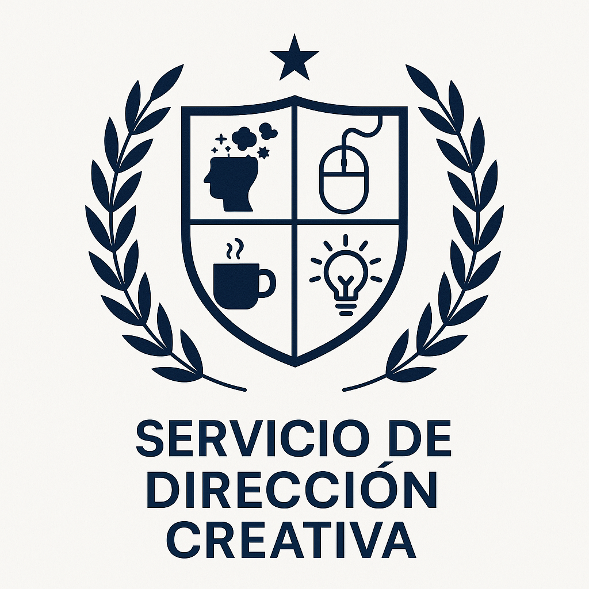
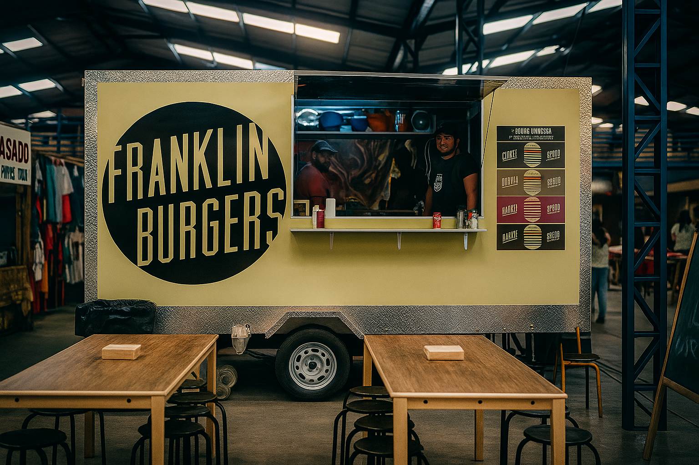

Director Creativo & Chef. Construyendo marcas y menús con la misma dosis de caos y estrategia.

El Honesto Mike
Lideré la concepción y el lanzamiento de la marca, incluyendo el desarrollo integral del menú y la estrategia de branding. Mencionada entre las 50 mejores hamburguesas del mundo. Nada mal.
Ver detalles y reconocimientos →
Dispensario Nacional
Lideré el desembarco y la apertura de la primera sucursal en Viña del Mar, gestionando el proyecto, el equipo y la estrategia de lanzamiento para esta nueva industria.

Director Creativo
Dirección de arte, branding y estrategia para agencias de publicidad (Havas, JWT) y marcas propias a lo largo de más de 15 años.
Ver más →
Franklin Burgers
Mi primer emprendimiento. Un food truck en el Persa Bio Bío que fue pionero en el movimiento de hamburguesas gourmet en Santiago.
Ver más →Laboratorio de Innovación Digital
Explorando la intersección entre arte, código y IA generativa para crear nuevas experiencias visuales y narrativas.
Ver más →SOBRE MÍ
Forjado en la publicidad y templado en la cocina. Creo que las mejores ideas, como la mejor comida, son honestas, audaces y se sirven sin rodeos. Mi carrera es una mezcla de riesgo, estrategia y una cantidad probablemente insalubre de mantequilla.
He construido marcas y he volteado hamburguesas, pero mi proyecto más reciente se siente diferente. Se trata de llevar una nueva industria, el cannabis medicinal, a mi ciudad, Viña del Mar, con el Dispensario Nacional. Pero esta vez, lo hice rodeado de mi gente: mi mejor amigo como socio y mi familia en el equipo. Una aventura donde mi hija y yo tuvimos el honor de ser los primeros Budtenders de la ciudad. Otro salto al vacío, sí, pero nunca tan bien acompañado.
He sido jurado en festivales, he liderado equipos creativos y he volteado hamburguesas. Y sí, Dexter Holland de The Offspring vino a mi local. Probablemente el peak de mi carrera.

HABLEMOS
Siempre estoy abierto a colaborar en proyectos interesantes o simplemente a charlar sobre buenas ideas, buena comida o buena música.
Puedes encontrarme en Instagram, o enviarme un correo a tondreau@gmail.com.